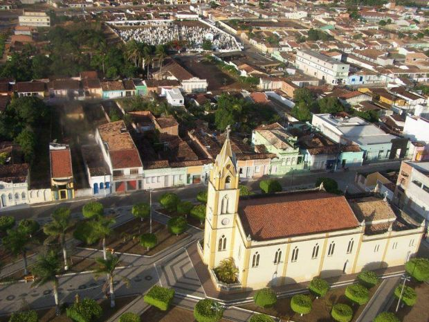

Frei Paulo
História
Em meados da década de 1860, o Bispo e membros religiosos de Itabaiana, convidaram o missionário capuchinho Frei Paulo de Casa Nova (algumas fontes informam Paulo Antônio Casanova ou Paulo Antônio Damele de Casanova di Rovegno: Gênova, 1 de dezembro de 1813 - Salvador, 30 de janeiro de 1891) para celebrar missas na cidade. Aceitando a proposta, Casa Nova trouxe consigo o Frei Davi de Umbértide e ambos passaram a ministrar os serviços religiosos na região. Após uma missa realizada na localidade de "Chã de Jenipapo", Casa Nova descobriu um amplo planalto desabitado e como tinha a intenção de abrir uma nova missão, articulou, com autoridades locais, a viabilidade de seu projeto. Com a ajuda dos capitães José Alves Teixeira e Antônio Telles de Góes, fincou a primeira pedra da igreja, chamada de Igreja de São Paulo, no dia 25 de janeiro de 1868.
Depois de algum tempo isolada, alguns moradores começaram a fixar residência ao lado da igreja. Com a ajuda de Antônio Teixeira, Lourenço da Rocha Travassos e Tomaz de Aquino e Silva, houve o crescimento populacional do arraial e no momento em que já contava com 100 residências construídas, tornou-se um distrito de Itabaiana em 19 de abril de 1886 por decreto provincial do então presidente Manuel José de Araújo Góis. Nesta data, o novo distrito foi batizado de "São Paulo".
Com início da República do Brasil, foi elevada a categoria de Vila na data de seu 22° aniversário de fundação, em 25 de janeiro de 1890, quando foi desmembrado de Itabaiana.
A emancipação política da então vila de São Paulo só ocorreu em 23 de outubro de 1920, quando foi elevada a condição de Município. Em 2 de março de 1938[6], a cidade é rebatizada para "Frei Paulo" em homenagem ao seu fundador e em dezembro de 1943, a distrito sede da cidade foi rebatizado de São Paulo para Frei Paulo.
Durante o período da Republica velha e até o inicio do Estado Novo, Frei Paulo teve 18 interventores. Em 1938, Napoleão Emygdio da Costa foi indicado como o primeiro prefeito da cidade. Em 1947, Izauro Soares foi o primeiro prefeito eleito do município.
fonte: https://pt.wikipedia.org/wiki/Frei_PauloDados Gerais de acordo com o IBGE
| Prefeito (a) | Anderson Menezes |
| Vice-Prefeito (a) | Mercia Dantas Nunes De Souza |
| Site do município | https://freipaulo.se.gov.br/ |
| Área territorial | 399,178 km² |
| População estimada | 15,688 pessoas |
| Densidade demográfica | 34,65 hab/km² |
| IDHM | 0,589 |
| PIB per capita | R$ 16.392,78 |